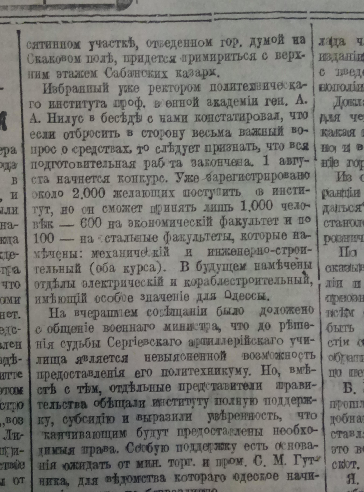
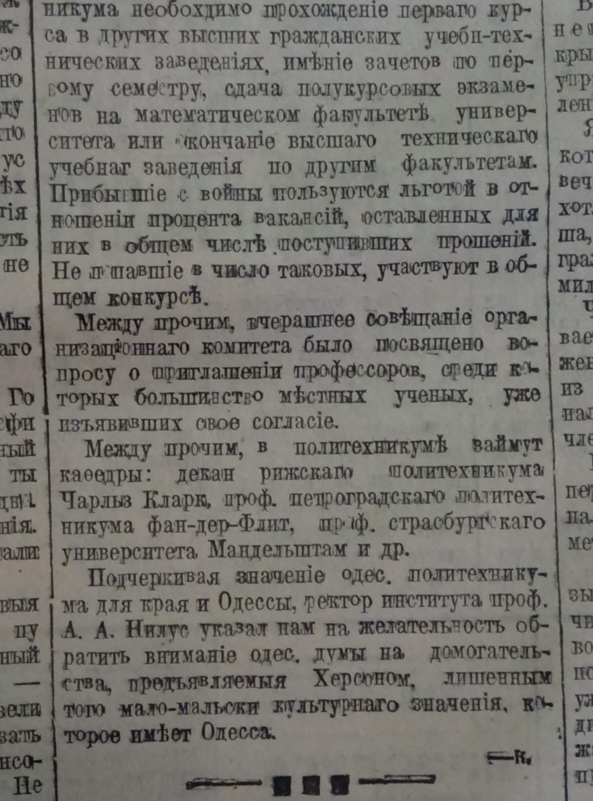
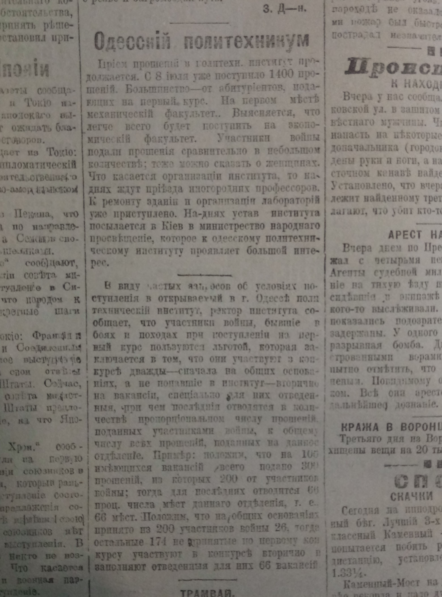

АРТЕФАКТЫ
Публикации в газете про создание Одесского политехникумаОдесский листок від 10 апреля 1918 года

Одесский листок от 18 мая 1918 года

Одесский листок от 23 июня 1918 года

Одесский листок от 23 июня 1918 года
Одесский листок от 3 июля 1918 года

Одесский листок от 4 июля 1918 года

Одесский листок от 4 июля 1918 года
Одесский листок от 4 июля 1918 года
Одесский листок от 4 июля 1918 года

Одесский листок от 4 июля 1918 года
Одесский листок от 4 июля 1918 года
Одесский листок от 5 июля 1918 года
Одесский листок от 10 июля 1918 года
Одесский листок от 25 июля 1918 года
Одесский листок от 17 сентября 1918 года
Одесский листок от 19 вересня 1918 года. Полное содержание впервые прочитанной лекции Кузнецовым К.А. "Право и экономика" в ОПИ было опубликовано в газете "Одесский листок", копия которого хранится в музее ОНПУ.